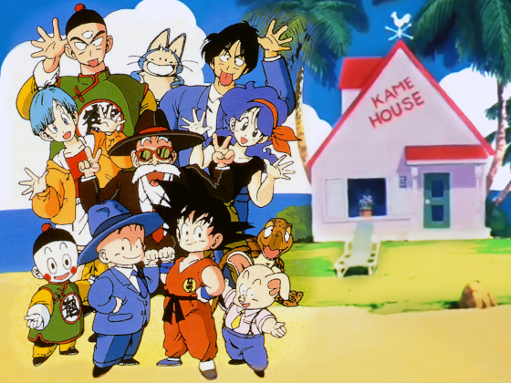
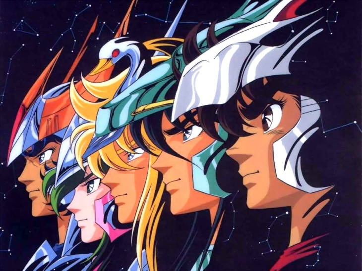
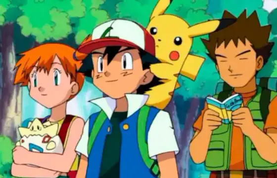
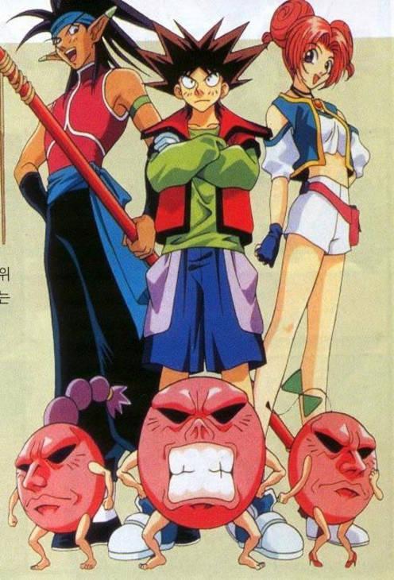
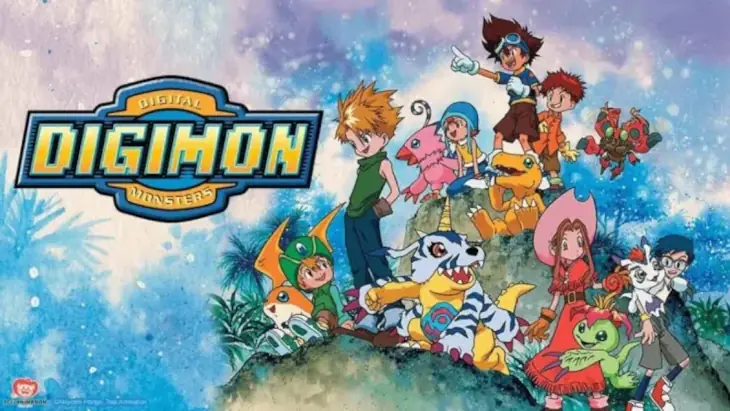
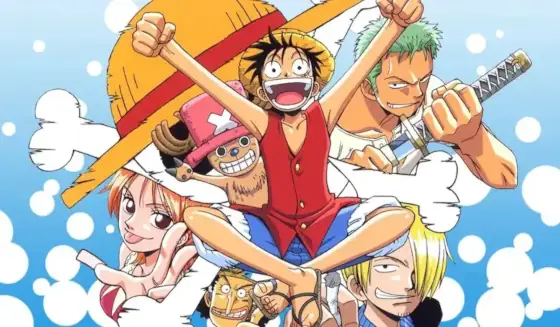

Os animes da atualidade são muito bons, mas se você perguntar para pessoas que são fãs de animes quais animes eles mais gostam, eles provavelmente falarão animes antigos.
E para pessoas que não são da bolha que veem animes, e perguntar o que eles mais gostavam de assistir quando pequenos, eles falarão de desenhos que viam e programas e no meio disso os animes que marcaram época vão estar no meio.
Isso mostra de onde começou a popularização dos animes, como alguns animes deram início a tantos gêneros de animes e design. Então vamos relembrar alguns animes do passado?
Dragon Ball

Dragon Ball é uma popular franquia de anime e mangá do japonês Akira Toriyama que segue as aventuras de Son Goku, um jovem garoto com força extraordinária, em busca das Esferas do Dragão, que concedem desejos, enquanto se torna um grande guerreiro e protege a Terra de terríveis ameaças. Originada de um mangá publicado na Weekly Shōnen Jump a partir de 1984, a série se expandiu para diversas adaptações, continuações como Dragon Ball Z, e se tornou um fenômeno global devido ao seu estilo de arte, humor e batalhas épicas.
Criação e Início
Criador: A série foi criada por Akira Toriyama, um mangaká japonês.
Inspiração: Toriyama inspirou-se na comédia "O Grande Mestre dos Lutadores", de Jackie Chan, e no romance clássico chinês "Jornada para o Oeste".
Mangá: O mangá começou a ser publicado em 1984 na revista Weekly Shōnen Jump.
Abertura
Yu Yu Hakusho
Yu Yu Hakusho acompanha Yusuke Urameshi, um delinquente juvenil que morre ao salvar a vida de uma criança e é enviado para o submundo. Lá, ele se torna um Detetive Espiritual e, com a ajuda de amigos como Keiko, Botan e Kuwabara, investiga casos envolvendo demônios e fenômenos paranormais no mundo humano, aprendendo a lutar e a controlar os seus poderes.
Criação e Início
Mangá: Yu Yu Hakusho começou como um mangá criado por Yoshihiro Togashi, que foi serializado na revista Weekly Shonen Jump de 1990 a 1994.
Adaptação: A adaptação para anime foi produzida pelo estúdio Pierrot, o mesmo de Hunter x Hunter, e estreou no Japão em outubro de 1992.
Exibição: O anime foi exibido no Brasil em 1997 pela TV Manchete e se tornou um dos favoritos do público.
Dublagem: A dublagem brasileira é frequentemente elogiada por sua qualidade e adaptações de gírias, o que contribuiu para o grande sucesso da série no país.
Significado do Título: "Yu Yu Hakusho" pode ser traduzido como "o livro em branco do fantasma brincalhão", referindo-se à morte e ressurreição do protagonista, diz o YouTube.
Abertura
Cavaleiros do Zodiaco

"Os Cavaleiros do Zodíaco" conta a história de cinco jovens cavaleiros – Seiya (Pégaso), Shiryu (Dragão), Hyoga (Cisne), Shun (Andrómeda) e Ikki (Fênix) – que usam o poder interior do Cosmo e usam armaduras inspiradas em constelações para proteger a reencarnação da deusa grega Atena, Saori Kido, de forças malignas que ameaçam a Terra, como deuses gregos e o submundo de Hades. A série acompanha suas batalhas e aventuras, começando com um torneio para recuperar a Armadura de Ouro de Sagitário e evoluindo para lutar contra ameaças cada vez maiores.
Criação e Início
Mangá: A série foi criada por Masami Kurumada, com a primeira aparição de Saint Seiya ocorrendo em 1986, o mesmo ano em que o anime foi lançado.
Anime: A adaptação para anime, produzida pela Toei Animation, foi exibida no Japão entre 1986 e 1989, com 114 episódios.
Conceito: O anime segue jovens guerreiros, os Cavaleiros, que usam armaduras e o poder do "cosmos" para lutar contra diversas ameaças, em um enredo cheio de mitologia grega e fantasia.
Chegada no Brasil: O anime chegou ao Brasil em 1994, na Rede Manchete, sendo a série principal que expandiu a popularidade do anime no país.
Importância Cultural: A série foi fundamental para expandir o mundo dos animes no Brasil e teve uma grande influência sobre outras obras.
Abertura
Fly (Dragon Quest: Dai no Daibouken)
Fly, o Pequeno Guerreiro (Dragon Quest: Dai no Daibouken), conta a história de Dai, um garoto humano que vive na ilha de Delmurin, um lugar onde monstros e demônios, antes subjugados pelo Rei Demônio Hadlar, agora vivem em paz, criados por Brass, um mago monstruoso, e junto com o pequeno Fly. Sonhando em ser um herói, Dai vê seu sonho ameaçado com o retorno de Hadlar e o surgimento de outro demônio poderoso, o que o leva a se tornar um aprendiz do mestre herói Avan. Após um sacrifício para proteger Dai e seus amigos, Dai embarca em uma jornada para vingá-lo e restaurar a paz mundial.
Criação e Início
Origem: O anime é baseado no mangá Dragon Quest: Dai no Daibōken, publicado na Weekly Shōnen Jump entre 1989 e 1996.
Inspiração: A obra é inspirada na famosa franquia de jogos Dragon Quest, com o criador da série de games, Yūji Horii, supervisionando o mangá.
Estilo de Arte: O design dos personagens, com um traço que lembrava Dragon Ball, foi feito por Akira Toriyama.
Primeiro Anime: A primeira adaptação em anime foi ao ar no Japão entre 1991 e 1992, com 46 episódios.
Contexto Brasileiro: A animação foi exibida no Brasil nos anos 90, no SBT, com a famosa música de abertura criada pela brasileira Gota Mágica.
O Remake e a Conclusão da História
Anúncio do Remake: Em 2019, foi anunciado um remake do anime com um novo estilo e que, dessa vez, adaptaria a história completa do mangá.
Anime Moderno: O remake, com 100 episódios, foi exibido no Japão entre 2020 e 2022, e está disponível no Brasil em plataformas de streaming.
Objetivo: O novo anime tem como objetivo apresentar a história completa do mangá, diferentemente da animação original, que não chegou ao final da saga.
Abertura
Abertura do Remake
Pokemon

Pokémon é uma popular franquia japonesa, iniciada em 1996, que gira em torno de criaturas chamadas Pokémon e o mundo onde humanos e estes seres coexistem. O objetivo principal dos jogadores, ou protagonistas, é capturar, treinar e batalhar com Pokémon, muitas vezes enquanto viajam para se tornarem os melhores "Treinadores Pokémon". Inspirada na colecção de insetos, a franquia expandiu-se dos jogos para um bem-sucedido anime, filmes, e outros produtos, e Pikachu é o seu personagem mais reconhecível.
Criação e Início
Criação: Pokémon foi criado por Satoshi Tajiri e Ken Sugimori.
Surgimento da Ideia: Satoshi Tajiri teve a ideia de Pokémon ao observar crianças mais interessadas em videogames do que em brincar ao ar livre, inspirando-se na sua paixão de infância por coletar insetos.
Expansão: Depois do seu lançamento em jogos eletrónicos, a franquia tornou-se um fenómeno cultural com um anime de longa duração, filmes, jogos de cartas, e muito mais.
Popularidade: A série se tornou um marco cultural, introduzindo os fãs a conceitos como ginásios, a Equipe Rocket e diferentes regiões do mundo Pokémon, tornando-se um sucesso global.
Pikachu: O Pikachu é a figura mais famosa da franquia e tem o estatuto de mascote da Pokémon, sendo um ícone reconhecido em todo o mundo.
Abertura
Bucky

Bucky é um anime sobre Buck, um garoto ambicioso que sonha em dominar o mundo e se torna a Grande Criança do primeiro mundo, recebendo um espírito para combater monstros. Ele viaja pelos doze mundos em busca de sua licença de Grande Criança, enfrentando desafios e descobrindo que os monstros são vítimas de um "veneno do despertar". Juntamente com seus companheiros, ele precisa descobrir a verdade por trás do aumento da agressividade dos monstros e o que está afetando a harmonia dos doze mundos.
Criação e Início
Mangá: A série é uma adaptação do mangá de mesmo nome, criado por Ami Shibata e publicado entre 1997 e 1999.
Anime: A adaptação para anime, com 26 episódios, foi produzida pelo estúdio Softx Trans Arts e exibida no Japão de outubro de 1999 a março de 2000 pela TV Tokyo.
Temas: O anime aborda temas como amizade, ambientalismo, autoritarismo, superação e a importância de nunca abandonar os sonhos, mesmo quando se torna um adulto, pois os sonhos podem se tornar poder físico ou um "veneno" quando transformados em pesadelos.
Brasil: O anime foi transmitido no Brasil pela Rede Bandeirantes, no bloco infantil Band Kids, e mais tarde reprisado pela Rede 21 e, mais recentemente, pela TV Diário.
Popularidade: A série se tornou um grande sucesso no Brasil, apesar de ter alcançado pouca popularidade em seu país de origem e em outras partes do mundo.
Abertura
Samurai- X
Samurai X (Rurouni Kenshin) é um anime baseado no mangá de Nobuhiro Watsuki, que estreou no Japão em 1996 e foi exibido no Brasil em 1999 pela Globo. A história acompanha Kenshin Himura, um ex-assassino lendário que busca redenção, ambientada durante a Era Meiji no Japão. A primeira adaptação para anime teve 95 episódios, mas não adaptou o arco final do mangá, o que levou à produção de um remake mais fiel à obra original.
Criação e Início
Mangá: A franquia começou como um mangá escrito por Nobuhiro Watsuki, lançado em 1994.
Anime Original: A adaptação para a TV foi ao ar no Japão entre janeiro de 1996 e setembro de 1998, com 95 episódios, e foi animada pelos Estúdios Gallop e Deen.
Enredo: A trama segue Kenshin Himura, um ex-assassino conhecido como "Battousai, o Retalhador", que se torna um andarilho para ajudar os outros, utilizando uma espada de lâmina reversa para não matar.
Exibição no Brasil: No Brasil, o anime foi exibido pela Rede Globo em 1999 e, posteriormente, sem cortes e com todos os episódios, pela Cartoon Network.
Abertura
Digimon

A série "Digimon" acompanha crianças escolhidas (os "DigiEscolhidos") que são transportadas para um mundo digital (o Digimundo), onde fazem amizade com criaturas chamadas Digimon e se unem para salvar o Digimundo das forças do mal. Equipada com um Digivice, cada criança tem um parceiro Digimon com quem desenvolve uma forte ligação, e juntos eles evoluem ("digivoluem") em formas mais poderosas para enfrentar os desafios e ameaças que surgem em sua jornada.
Criação e Início
Criador: O criador de Digimon é um nome fictício, Akiyoshi Hongo, que serve como pseudônimo para uma equipe de três pessoas da Bandai: Aki Maita, Hiroshi Izawa e Takeichi Hongo. Essa abordagem foi usada pela Bandai para reconhecer a colaboração de várias pessoas no desenvolvimento da franquia Digimon, que começou com o brinquedo "Digital Monster".
Origem: A franquia começou como uma versão para meninos dos brinquedos virtuais Tamagotchi, conhecidos como V-Pets.
Exibição no Brasil: O anime Digimon foi exibido pela primeira vez no Brasil em 2000. A Fox Kids fez a pré-estreia em 25 de junho, seguida pela exibição na Rede Globo em 3 de julho do mesmo ano, como parte do programa Bambuluá (dentro do bloco TV Globinho).
Abertura
One Piece

One Piece começou como um mangá escrito por Eiichiro Oda, publicado pela primeira vez na Shonen Jump em 1997, e foi adaptado para anime pela Toei Animation em 1999, contando a história de Monkey D. Luffy e sua tripulação pirata em busca do maior tesouro do mundo, o One Piece, para se tornar o Rei dos Piratas. O anime, que se tornou um dos mais populares do mundo, ainda está em produção e é baseado na série de mangá mais vendida da história.
Criação e Início
Origem no Mangá: A história de One Piece surgiu primeiro como um mangá escrito e ilustrado por Eiichiro Oda.
Publicação: O mangá foi publicado pela primeira vez em 1997 na revista japonesa Shonen Jump.
Adaptação para Anime: A adaptação para anime começou em 1999, sendo produzida pelo estúdio Toei Animation e transmitida pela Fuji TV.
Popularidade e Longevidade
Recordes de Vendas: O mangá de One Piece é o mangá mais vendido de todos os tempos, quebrando recordes de tiragem inicial e de vendas por volume.
Sucesso Contínuo: O anime também se tornou um fenômeno global, com uma enorme base de fãs de diversas idades, e continua em produção.